1. Carga Tributária Atual x IBS/CBS (26%)
Comparação consolidada de ICMS + PIS + COFINS versus IBS/CBS com alíquota combinada de 26% (sobre VL_ITEM · saídas).
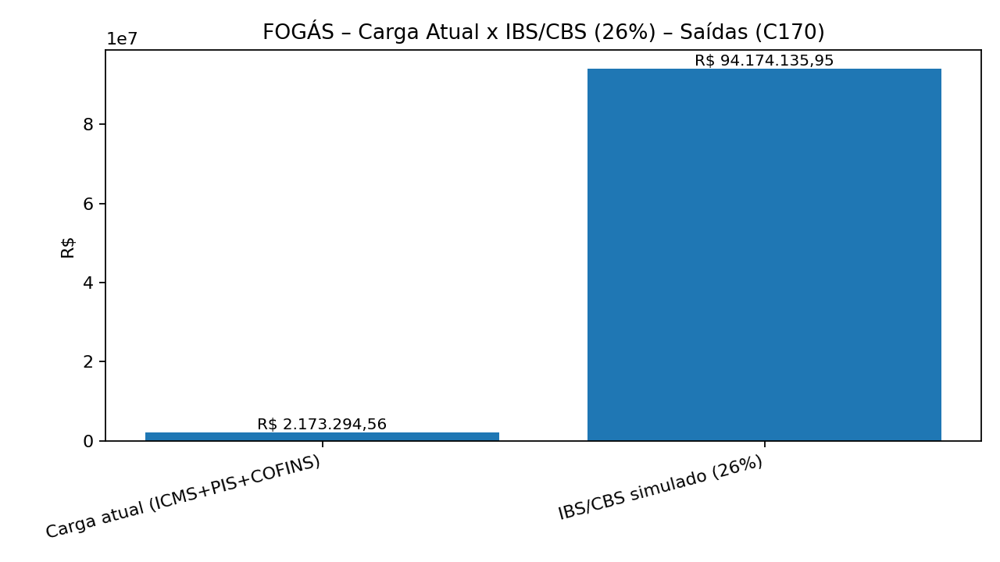
Leitura executiva
A FOGÁS apresenta alíquota efetiva média informada de 0,6% nas saídas (IND_OPER=1) no recorte do C170, bem abaixo do cenário de referência do IBS/CBS (26%). Isso indica alto risco de salto na migração para um modelo uniforme caso a carga atual não esteja refletida no item (ex.: monofásico/ST).
Recomendações imediatas: (1) simulação líquida (entradas x saídas) com créditos, (2) classificação de operações por CFOP/NCM e regimes especiais, (3) avaliação de repasse e cláusulas contratuais por praça (UF) no destino.
2. Top CFOP por Receita (saídas) – Carga Atual x IBS/CBS (26%)
Foco nas naturezas de operação com maior materialidade, destacando onde a reforma “bate” mais no recorte bruto.
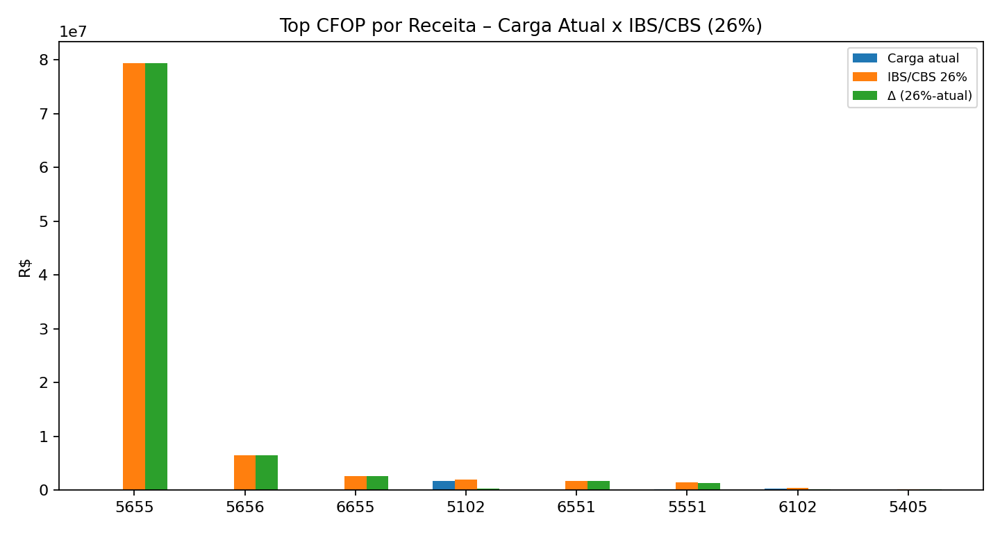
Prioridades
Use os CFOPs líderes como escopo mínimo do projeto de reforma: revisar parametrização fiscal, enquadramentos (monofásico/ST/diferimento), cadastro (NCM/CFOP/CST) e desenho de repasse comercial.
Tabela de apoio (Top 6):
| CFOP | Receita (saídas) | Carga atual | IBS/CBS 26% | Δ 26% |
|---|---|---|---|---|
| 5655 | R$ 305.694.800,98 | R$ 0,00 | R$ 79.480.648,25 | R$ 79.480.648,25 |
| 5656 | R$ 24.820.756,38 | R$ 0,00 | R$ 6.453.396,66 | R$ 6.453.396,66 |
| 6655 | R$ 9.895.389,96 | R$ 0,00 | R$ 2.572.801,39 | R$ 2.572.801,39 |
| 5102 | R$ 7.697.753,62 | R$ 1.679.746,85 | R$ 2.001.415,94 | R$ 321.669,09 |
| 6551 | R$ 6.723.934,80 | R$ 1.693,44 | R$ 1.748.223,05 | R$ 1.746.529,61 |
| 5551 | R$ 5.642.181,88 | R$ 197.195,02 | R$ 1.466.967,29 | R$ 1.269.772,27 |
3. Receita por UF de Destino (Top 10 · saídas)
Base para estratégia na tributação no destino e avaliação de riscos por praça/cliente.
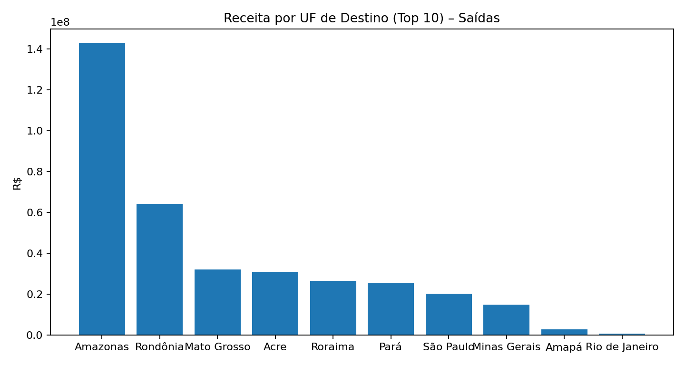
Implicações
Na lógica do IBS, o foco migra para o destino. UFs com maior materialidade devem ser priorizadas em: repasse de preço, condições comerciais e governança de dados (cadastro do destinatário).
Top UFs (receita · saídas):
| UF | Receita (saídas) |
|---|---|
| Amazonas | R$ 142.801.001,51 |
| Rondônia | R$ 64.289.823,58 |
| Mato Grosso | R$ 32.194.579,73 |
4. Cenários de IBS/CBS por Alíquota (24% / 26% / 28%)
Sensibilidade da carga em função da alíquota global do IBS/CBS, aplicada sobre VL_ITEM das saídas.
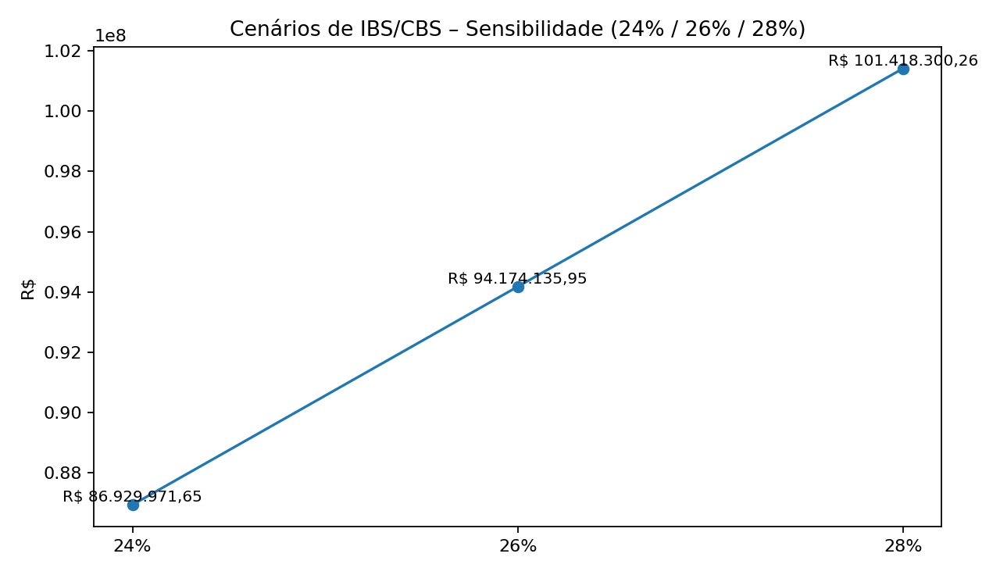
Como usar
Útil para “bandas” de preço e planejamento: 24% e 28% como faixas, com 26% como referência. Em cada cenário, compare com (i) o débito atual real (não apenas o informado no item) e (ii) créditos de entradas.
5. Pareto de CFOP – onde concentrar esforço
Concentração da receita (saídas) por CFOP para priorizar as operações mais materiais.
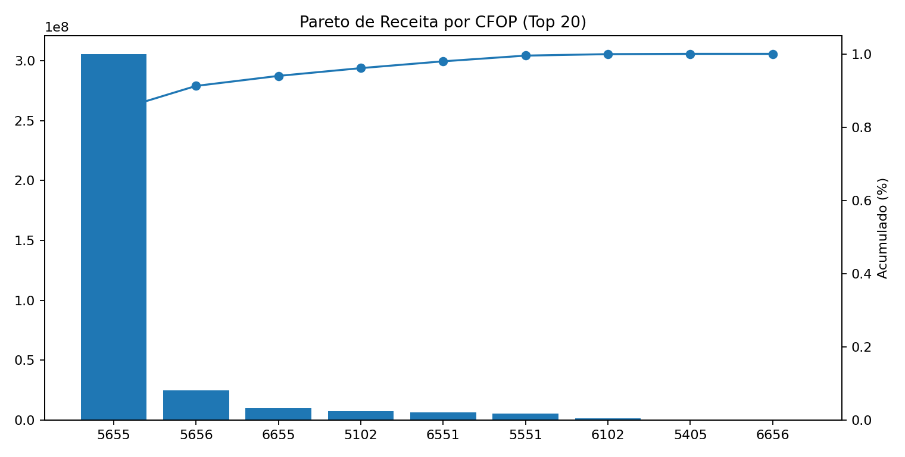
Gestão do escopo
Poucos CFOPs explicam a maior parte da receita. Construa um backlog objetivo: primeiro os CFOPs que somam “quase tudo”, depois as exceções e ajustes finos.
6. Heatmap CFOP x UF – hotspots de impacto (Δ IBS/CBS 26%)
Matriz de impacto por combinação de CFOP e UF (IBS/CBS 26% menos carga atual informada), recortada para Top CFOP e Top UF.
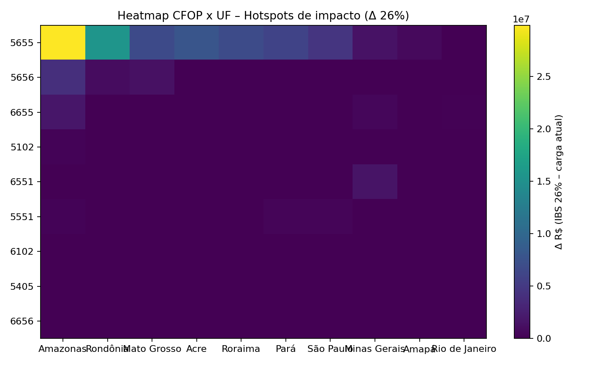
Decisão prática
As células mais intensas indicam onde o recorte bruto sugere maior variação de carga por destino e natureza de operação. Use como mapa para: precificação por praça, renegociação de condições e auditoria de enquadramentos (monofásico/ST).
7. Histograma – alíquota efetiva atual (ICMS+PIS+COFINS)
Distribuição da carga efetiva atual por item: (ICMS + PIS + COFINS) / VL_ITEM, considerando apenas saídas.
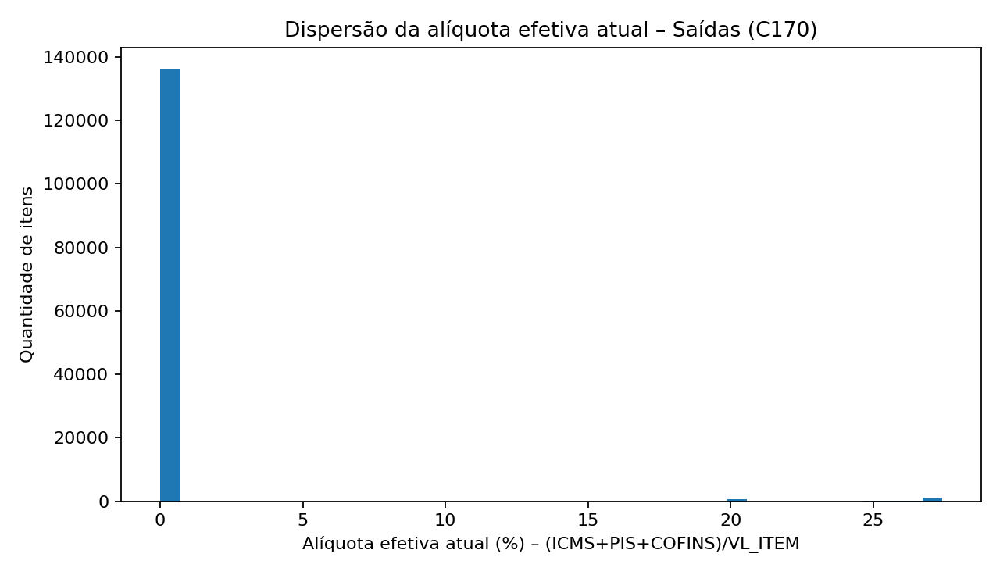
O que o histograma está dizendo
Percentis (itens · saídas): P25 0,0% · Mediana 0,0% · P75 0,0% · P90 0,0% · P95 0,0%.
Uma distribuição concentrada em 0% sugere que a carga não está sendo evidenciada no item (ex.: monofásico/ST/diferimento), reforçando a necessidade de complementar a análise com apuração real, regras específicas e créditos.
8. Waterfall – de onde vem o Δ (Atual → IBS/CBS 26%)
Decomposição do aumento/redução por CFOP, conectando o número final às causas.
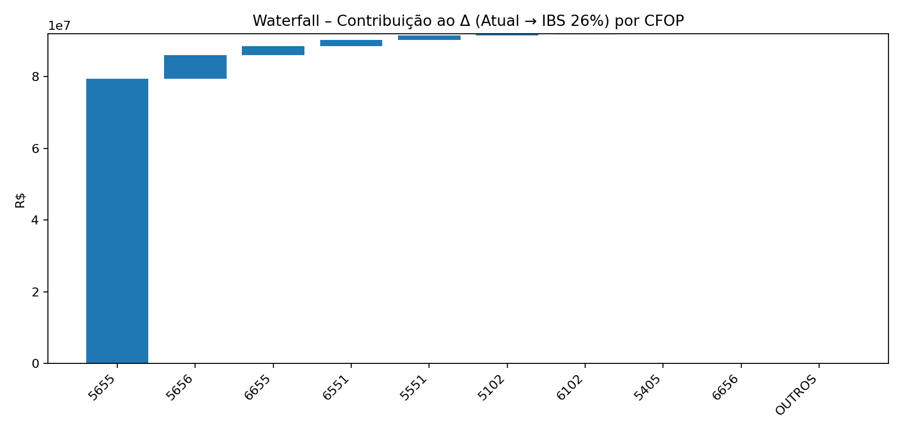
Como usar em reunião
Este gráfico aponta as naturezas de operação que mais “puxam” a diferença no cenário 26%. Trate os 3–5 primeiros CFOPs como frentes: (cadastro + processo + política comercial + enquadramento tributário).
9. Mapa de risco por NCM – materialidade x Δ%
Prioriza produtos: eixo X materialidade (log) e eixo Y variação percentual sobre a carga atual informada (26%).
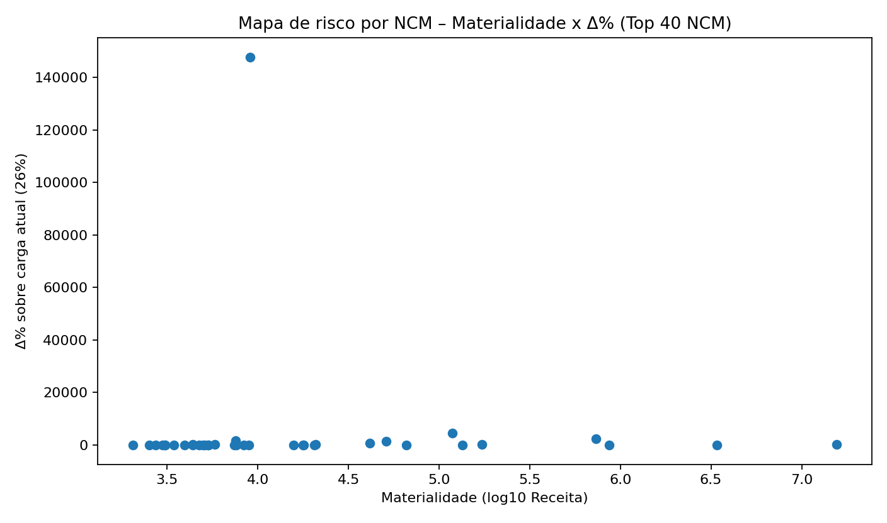
Prioridade por mix
NCMs de alta materialidade devem entrar primeiro no plano: revisão fiscal, política de preço, margens e estratégia comercial. Quando a carga atual informada é baixa, complemente com análise de regimes específicos do setor e cadeia (upstream/downstream).
Top NCM (receita · saídas + Δ 26%):
| NCM | Receita (saídas) | Δ 26% |
|---|---|---|
| 27111910 | R$ 340.411.475,58 | R$ 88.506.983,65 |
| 73110000 | R$ 15.607.102,39 | R$ 2.781.764,75 |
| 29011000 | R$ 3.412.089,48 | R$ 270.722,40 |
| 84814000 | R$ 865.800,00 | R$ 50.735,88 |
| 87042310 | R$ 734.205,00 | R$ 183.122,82 |
| 87043190 | R$ 344.400,00 | R$ 89.544,00 |
10. B2B x B2C – impacto (proxy por CPF/CNPJ)
Comparativo de receita e carga (atual x IBS/CBS 26%) por segmentação simples (CNPJ vs CPF/indefinido), em saídas.
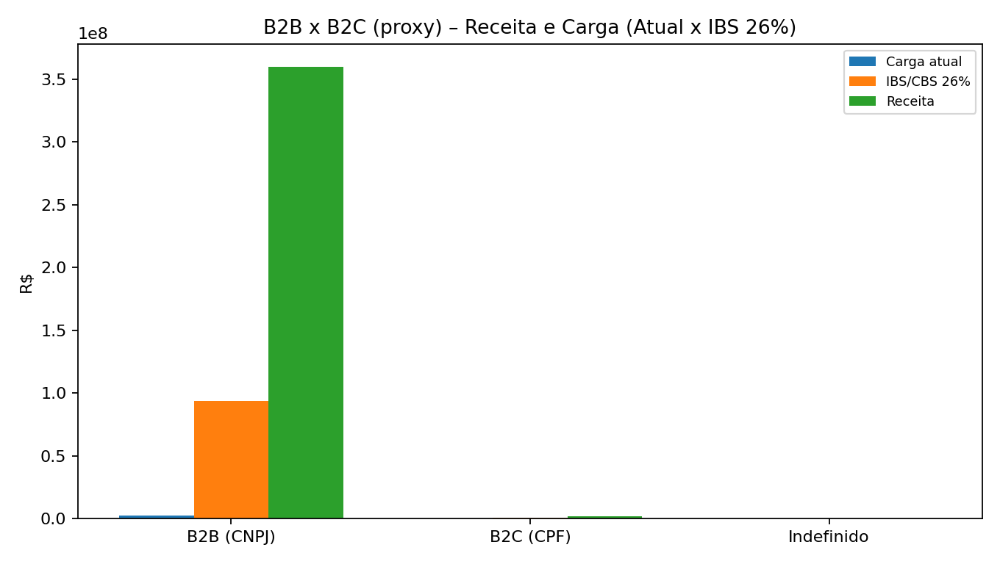
Interpretação
Em B2B, a lógica de crédito tende a reduzir “custo econômico” do imposto para o cliente (neutralidade). Em B2C, o repasse de preço é mais sensível e exige leitura de elasticidade e concorrência.
11. Qualidade cadastral e consistência fiscal (itens · saídas)
Indicadores de completude para reduzir risco de parametrização e divergências.
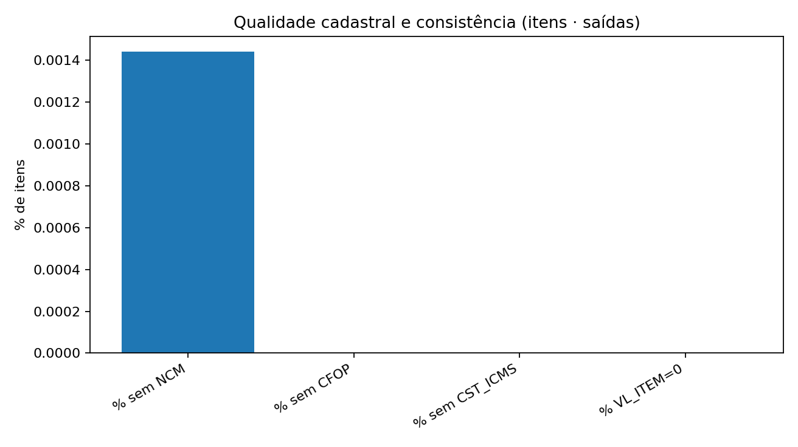
Checklist rápido
- % sem NCM: 0,0%
- % sem CFOP: 0,0%
- % sem CST_ICMS: 0,0%
- % VL_ITEM=0: 0,0%
12. Regime tributário do destinatário (quando disponível) – risco comercial e de crédito
Distribuição da receita por regime do cliente (se informado na base). Itens “Não encontrado” sinalizam lacunas cadastrais.
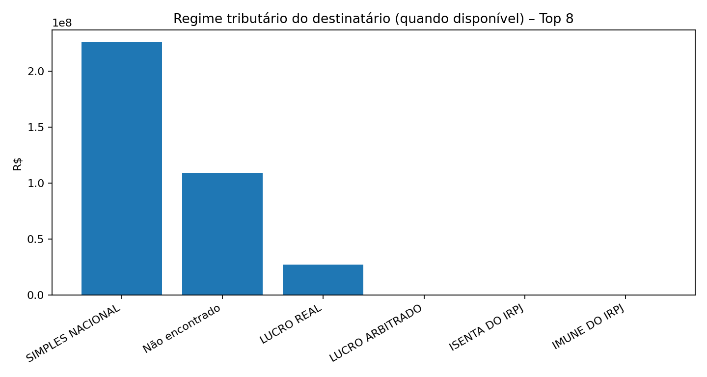
O que olhar
Clientes em regimes com forte capacidade de crédito (ex.: Lucro Real) tendem a absorver melhor a lógica de crédito. Percentuais elevados em “Não encontrado” sugerem lacuna cadastral (risco de segmentação/precificação).
Tabela de apoio:
| Regime (base destino) | Receita (saídas) | % |
|---|---|---|
| SIMPLES NACIONAL | R$ 225.503.121,00 | 62,3% |
| Não encontrado | R$ 109.173.873,75 | 30,1% |
| LUCRO REAL | R$ 27.236.038,00 | 7,5% |
| LUCRO ARBITRADO | R$ 117.435,40 | 0,0% |
| ISENTA DO IRPJ | R$ 100.453,00 | 0,0% |
| IMUNE DO IRPJ | R$ 77.294,06 | 0,0% |
Checklist de adequação (curto prazo)
Ações “sem arrependimento” para começar já, usando os hotspots identificados.
Trilha recomendada
- Simulação líquida (entradas x saídas): estimar IBS/CBS líquido e risco de acúmulo de créditos por período (capital de giro e ressarcimento).
- Mapeamento setorial (monofásico/ST): classificar operações onde a carga atual não aparece no item e ajustar a metodologia (evitar comparar “zero” com 26% sem qualificação).
- Governança de cadastros: validar NCM/CFOP/CST por famílias e operações (priorizando Top CFOP e Top NCM).
- Precificação por praça: criar matriz de repasse por UF e por CFOP (use o heatmap como mapa de decisão).
- Contratos B2B: revisar cláusulas de repasse e alinhamento com clientes-chave, considerando transição e crédito.
- Comitê de reforma: fiscal + comercial + finanças com rotina de cenários e acompanhamento da regulamentação.
Premissas utilizadas
Critérios e simplificações adotados para cálculo e visualizações.
- Base de receita: somatório de VL_ITEM apenas das saídas (IND_OPER=1).
- Carga atual (documental): somatório por item de VL_ICMS + VL_PIS + VL_COFINS conforme informado no C170.
- IBS/CBS simulado: aplicado de forma uniforme sobre a receita de saídas, nos cenários 24%, 26% e 28%.
- Δ (delta): IBS/CBS (cenário) − carga atual documental.
- Heatmap: recorte para Top 10 CFOP e Top 10 UF por receita de saídas (legibilidade).
- B2B x B2C (proxy): classificação por tamanho do documento em CPF/CNPJ (14 dígitos = CNPJ, 11 dígitos = CPF; demais = indefinido).
- Limitação crítica: este painel não calcula IBS/CBS líquido (créditos das entradas) e a carga atual pode não estar evidenciada no item (monofásico/ST/diferimento).